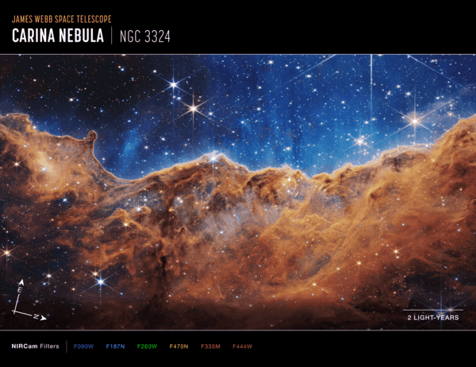
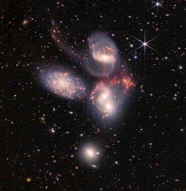
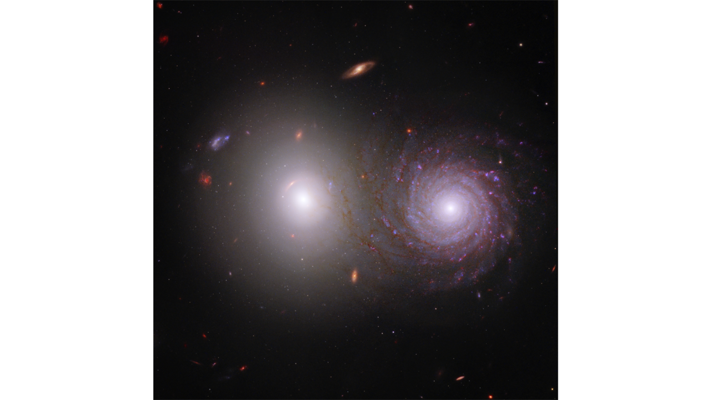
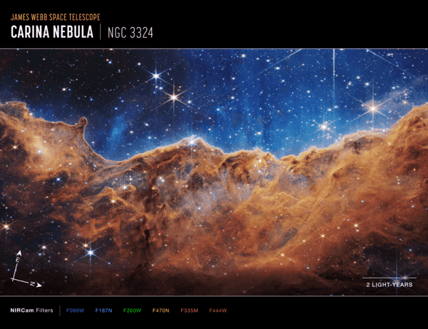
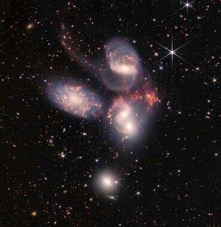
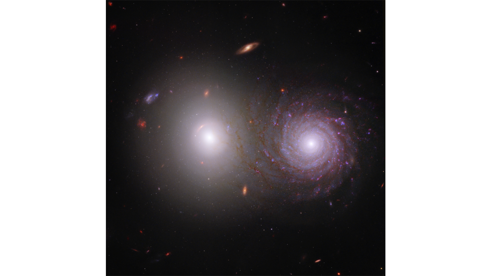

The James Webb Telescope
I hope you find exactly what you are looking for on this website. I hope you gain a new knowledge about how humankind is learning more each day about what is inside and outside our universe. Just 50 years ago, we would have never imagined sending a telescope around 2000 light-years (1 million miles) away from Earth. On April 12, 1961 the first human was successfully launched into space. Soviet cosmonaut, Yuri Gagarin made one orbit around Earth on a flight that lasted 108 minutes. Almost a month later on May 5,1961 the first American Astronaut, Alan Shepard was launched into space on a suborbital flight which lasted 15 minutes and reached a height of 116 miles into the atmosphere. 8 years later on July 21, 1969 American astronaut Neil Armstrong was the first person to walk on the moon. Fast forward to 2021, 60 years after the first human entered outer space. The James Webb Telescope was launched on December 25, 2021 at 7:20 AM EST. Who knows what the next 60 years will hold in space exploration, but I am confident that it will be amazing.

 


-->



-->